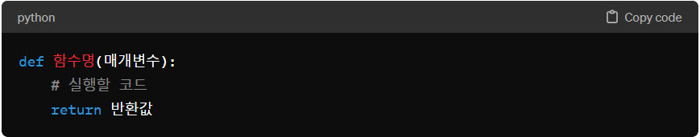
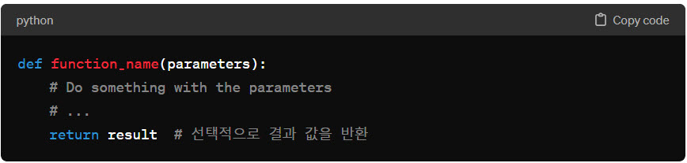

파이썬 함수에 대한 정의와 장점을 알려주세요
파이썬 함수에 대한 정의와 장점을 알려주세요
 파이썬에서 함수(function)는 특정 작업을 수행하는 코드 블록으로, 필요할 때마다 호출하여 사용할 수 있습니다. 함수를 잘 활용하면 코드를 깔끔하게 구성하고 반복 작성을 줄일 수 있습니다.
파이썬에서 함수(function)는 특정 작업을 수행하는 코드 블록으로, 필요할 때마다 호출하여 사용할 수 있습니다. 함수를 잘 활용하면 코드를 깔끔하게 구성하고 반복 작성을 줄일 수 있습니다.
함수의 정의
함수는 다음과 같은 구조를 가집니다.
- def 키워드로 함수 정의를 시작합니다.
- 함수명은 함수를 호출할 때 사용하는 이름입니다.
- 매개변수는 함수가 받아들일 입력 값이며, 없어도 됩니다.
- 함수 내부 코드는 반드시 들여쓰기로 작성합니다.
- return 문은 결과를 반환하며, 생략하면 None을 반환합니다.
함수의 장점
- 재사용성 : 한 번 정의한 함수를 여러 곳에서 반복 호출할 수 있습니다.
- 모듈화 : 프로그램을 작고 독립적인 단위로 나눠 유지보수가 쉬워집니다.
- 가독성 : 함수 이름만 봐도 어떤 작업을 하는지 파악할 수 있습니다.
파이썬 함수 선언에 대해 설명해주세요
함수 선언은 def 키워드로 시작하고, 함수 이름과 괄호, 콜론(:)을 작성한 뒤 들여쓰기된 코드 블록으로 구성됩니다.

매개변수가 없는 함수
def greet():
return "안녕하세요!"
print(greet()) # 안녕하세요!
매개변수가 있는 함수
def greet(name):
return f"안녕하세요, {name}님!"
print(greet("홍길동")) # 안녕하세요, 홍길동님!
여러 매개변수를 가지는 함수
def add(a, b):
return a + b
print(add(3, 5)) # 8
기본값(default)이 있는 매개변수
def greet(name, greeting="안녕하세요"):
return f"{greeting}, {name}님!"
print(greet("철수")) # 안녕하세요, 철수님!
print(greet("영희", "반가워")) # 반가워, 영희님!
단일 값 반환
def my_sum(a, b):
return a + b
result = my_sum(5, 3)
print(result) # 8
다중 값 반환
def get_user():
name = "홍길동"
age = 25
return name, age # 튜플로 반환됨
user_name, user_age = get_user()
print(user_name, user_age) # 홍길동 25
return이 없는 경우 (None 반환)
def print_message(message):
print(message)
result = print_message("안녕!")
print(result) # None
조건에 따라 다른 값 반환
def is_even(number):
if number % 2 == 0:
return True
else:
return False
print(is_even(4)) # True
print(is_even(5)) # False
- 두 수를 입력받아 곱셈 결과를 반환하는 함수 multiply(a, b)를 작성하세요
- 이름과 나이를 매개변수로 받아 "홍길동님은 25살입니다." 형식으로 출력하는 함수 introduce(name, age)를 작성하세요
- 숫자를 입력받아 양수이면 "양수", 음수이면 "음수", 0이면 "영"을 반환하는 함수 check_number(n)를 작성하세요
- greeting의 기본값이 "안녕하세요"인 함수 say_hello(name, greeting="안녕하세요")를 선언하고, 기본값 적용 여부를 확인하세요
# multiply 함수를 선언하세요
# multiply(4, 5) 를 호출하여 결과를 출력하세요
# introduce 함수를 선언하세요
# introduce("김철수", 20) 를 호출하세요
# check_number 함수를 선언하세요
# check_number(10), check_number(-3), check_number(0) 을 각각 출력하세요
# say_hello 함수를 선언하세요
# say_hello("민수") 를 호출하세요 (기본값 사용)
# say_hello("민수", "반갑습니다") 를 호출하세요 (기본값 대체)